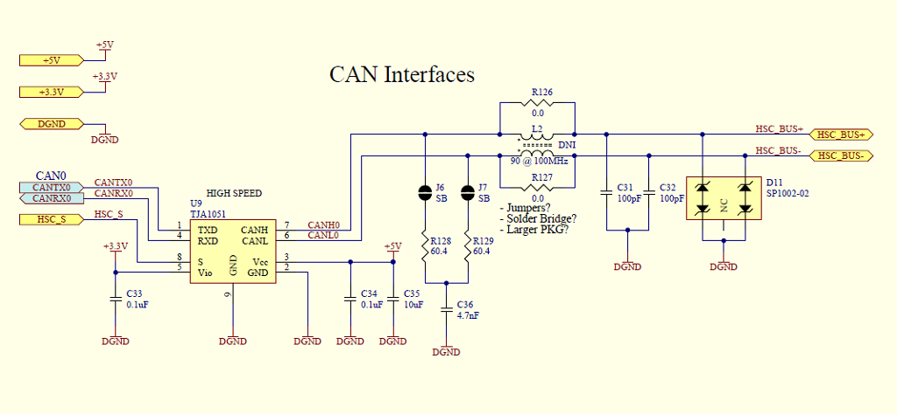

Automotive Interfaces
The M2 Inferface Board contains both the power supply circuitry and the automotive interfaces required to communicate with your car. This includes:
- 2x CAN bus
- 1x SWCAN (Single-Wire CAN)
- 2x LIN/9141
- J1850 VPW/PWM
To find libraries for any M2 interfaces, try the Macchina Community Showcase.

26-pin "Expansion" connector
Every M2 has a 26 pin "expansion" connector that provides even more connection options. For example: UART, SPI, I2C, six general purpose 12V drivers and six 12V analog inputs. See the schematic for actual pinout details.
Refer to the following diagram for pin 1 location. Note that the ODD pins are on the TOP row and the EVEN pins are on the BOTTOM row.

The following table shows what the function for each pin:
| Pin | Function | Notes |
|---|---|---|
| 1 | IN 1 | 0-12V Input |
| 2 | OUT 1 | 12V SOURCE Output |
| 3 | SCL0 | |
| 4 | SDA0 | |
| 5 | IN 2 | 0-12V Input |
| 6 | OUT 2 | 12V SOURCE Output |
| 7 | UART3 TX | K-LINE or LIN channel 1 |
| 8 | UART3 RX | |
| 9 | IN 3 | 0-12V Input |
| 10 | OUT 3 | 12V SOURCE Output |
| 11 | SPI0 CLK | |
| 12 | SPI0 MISO | |
| 13 | IN 4 | 0-12V Input |
| 14 | OUT 4 | 12V SINK Output |
| 15 | SPI0 CS/USART2RX | |
| 16 | SPIO MOSI | +12V INPUT |
| 17 | IN 5 | 0-12V Input |
| 18 | OUT 5 | 12V SINK Output |
| 19 | +12VIO | +12V (switched output) |
| 20 | +5V | +5 (constant output) |
| 21 | IN 6 | 0-12V Input |
| 22 | OUT 6 | 12V SINK Output |
| 23 | +3.3V | +12V INPUT |
| 24 | +12V | +12V (constant output) |
| 25 | GND | Ground |
| 26 | GND | Ground |
Find more about 12VIO here.
CAN
CAN bus is a vehicle bus standard used in most cars built after 2006. It is a message-based protocol that allows modules within a car to communicate with one another. While the physical layer is understood and open, the actual meaning of the messages sent over the bus are not. While some messages are legislated to be "standard", the majority of CAN messages in your typical car are not well documented.
The M2 has 2 CAN channels (in addition to the single-wire CAN channel) that can interface directly to the CAN bus network of your car. The M2 uses the 2 built-in CAN controllers found in the SAM3X and 2 external TJA1051 transceivers. Here is a typical example:

Here is the link to the datasheet: http://www.nxp.com/docs/en/data-sheet/TJA1051.pdf
CAN bus connections can be found on either the 16-pin OBD2 connector on the under-the-dash M2 or the 24-pin connector used by the under-the-hood M2.
Single-wire CAN
The Macchina M2 provides single-wire CAN support using a MCP2515 CAN controller.
LIN
Local Interconnect Network bus is an inexpensive, single wire, serial network protocol used in many modern cars. Typically, LIN would be used to control and monitor lower-priority devices such as seat positions, door locks, radio and illumination.
The M2 has 2 LIN channels that can interface directly to the LIN bus network of your car. Your M2 uses 2 external TJA1027 transceivers connected via UART to the processor.
Here is the link to the datasheet: https://www.nxp.com/docs/en/data-sheet/TJA1027.pdf
Note that the TJA1027 transceiver is used for both LIN and ISO9141 (K-LINE/L-LINE) for a total of 2 channels.
LIN bus connections can be found on either the 16-pin OBD2 connector on the under-the-dash M2 or the 24-pin connector used by the under-the-hood M2.
K-line (aka ISO9141, KWP2000)
ISO9141/K-line is typically found in Chrysler, European, and Asian vehicles built before around 2005. This protocol is similar to RS-232 but at different voltage levels and on a single, bidirectional line.
Some cars require a secondary line (sometimes referred to as L-Line).
M2 has two K-line channels and uses the TJA1027 transceiver to interface the 12-volt single bidirectional line from the vehicle to a 3.3V UART connection. While this part is designed for LIN, it is also K-line compatible. Here is typical interface circuit showing a channel of ISO9141/LIN connected to the UART channel of the processor.
K-line connections can be found on either the 16-pin OBD2 connector on the under-the-dash M2 or the 24-pin connector used by the under-the-hood M2.

Here is the link to the datasheet: https://www.nxp.com/docs/en/data-sheet/TJA1027.pdf
J1850
J1850 supports multiple/variants modes. To change between the levels required for PWM and VPW variants of J1850, use this signal:
J1850_PWM_nVPW
This signal is connected to physical pin 123 (PB8) of the SAM3X.
Make this pin HIGH for PWM and LOW for VPW
The following code that will both turn on power to J1850 circuit AND set level for either PWM or VPW:
void setup() {
pinMode(PS_J1850_9141, OUTPUT);
pinMode(PWM_nVPW, OUTPUT);
digitalWrite(PS_J1850_9141, HIGH); // LOW = no power at +12V_SW/+5V_SW
// HIGH = power at +12V_SW/+5V_SW
digitalWrite(PWM_nVPW, HIGH); // LOW = ~7.9v (VPW)
// HIGH = ~5.9V (PWM)
}
void loop() {
}